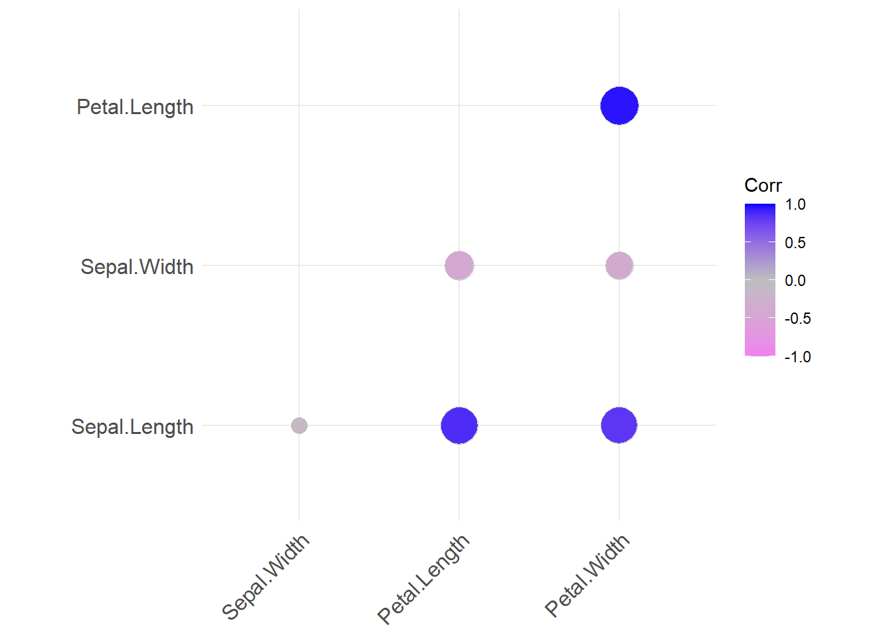

library(tidyverse)
library(ggcorrplot)
library(corrr)
library(fastDummies)8 Fallstudie EDA Iris Teil 2
In diesem Kapitel erklären wir zwei weitere wichtige Themen für die Vorverarbeitung der Daten, nämlich den Umgang mit NAs und den Korrelationskoeffizienten r.
8.1 Pakete laden
8.2 Fehlende Werte
8.2.1 Definition
Ob aufgrund von technischen Problemen, Messfehlern oder Nachlässigkeit beim Eintragen, fehlende Werte können grundsätzlich in jedem Datensatz vorkommen. Wendet man Befehle wie summarise() auf Spalten mit NAs an, kann der Befehl nicht ausgeführt werden. Deshalb sieht man oft am Ende von Code-Chunks so etwas wie drop_na(), was dazu dient, alle Zeilen, die NAs enthalten, für die Operation rauszuschmeißen. Das ist aber keine endgültige Lösung, denn NAs können die Aussagekraft des Datensatzes stark beeinträchtigen.
8.2.2 Auf fehlende Werte prüfen
Im ersten Teil der EDA haben wir ja die Extremwerte bestimmt und in NA umgewandelt:
iris %>%
summarise(q75 = quantile(Sepal.Width,
prob = .75,
na.rm = TRUE),
q25 = quantile(Sepal.Width,
prob = .25,
na.rm = TRUE))iris %>%
summarise(IQR_SW = IQR(Sepal.Width))Grenzwerte = c(3.3 + 1.5 * 0.5, 2.8 - 1.5 * 0.5)
iris.we <-
iris %>%
mutate(Sepal.Width.we = replace(.$Sepal.Width, .$Sepal.Width > 4.05 | .$Sepal.Width < 2.05,
NA)) Jetzt prüfen wir nochmal auf NAs und sehen, dass die vier Extremwerte jetzt NAs sind:
iris.we %>%
summarise((across(everything(),~sum(is.na(.x)))))8.2.3 Umgang mit fehlenden Werten
Aber wie geht man dann mit NAs um? Wenn es nicht viele Zeilen betrifft, kann man überlegen, die Zeilen, die NAs enthalten, mit drop_na() einfach zu entfernen. Wenn jedoch ein erheblicher Anteil der Zeilen betroffen sein sollte, dann wäre das Entfernen ein fataler Fehler, da dies zu einem riesigen Informationsverlust führen würde. Um das zu vermeiden, kann man alle NAs stattdessen mit einem mehr oder weniger repräsentativen Wert wie dem Mittelwert, Median oder dem Modus der entsprechenden Spalte ersetzen. Das macht unseren Datensatz zwar nicht viel aussagekräftiger, aber es ist allemal besser, als ganze Zeilen zu verlieren.
Unsere NAs ersetzen wir nun mit dem Mittelwert:
iris.we <- iris.we %>%
replace_na(replace = list(Sepal.Width.we = mean(.$Sepal.Width.we, na.rm = TRUE)))Gucken wir noch ein letztes Mal:
iris.we %>%
summarise((across(everything(),~sum(is.na(.x)))))Super, hat ja astrein funktioniert!
8.3 Korrelation
8.3.1 Definition
Der Korrelationskoeffizient, auch Produkt-Moment-Korrelation,[1] ist ein Maß für den Grad des linearen Zusammenhangs zwischen zwei mindestens intervallskalierten Merkmalen, das nicht von den Maßeinheiten der Messung abhängt und somit dimensionslos ist. Er kann Werte zwischen -1 und +1annehmen. Bei einem Wert von +1 (bzw. -1) besteht ein vollständig positiver (bzw. negativer) linearer Zusammenhang zwischen den betrachteten Merkmalen. Wenn der Korrelationskoeffizient den Wert 0 aufweist, hängen die beiden Merkmale überhaupt nicht linear voneinander ab
Sind zwei Merkmale vollständig miteinander korreliert (d. h.|r|=1), so liegen alle Messwerte in einem 2-dimensionalen Koordinatensystem auf einer Geraden. Bei einer perfekten positiven Korrelation (r=+1) steigt die Gerade. Wenn die Merkmale perfekt negativ miteinander korreliert sind (r=-1), sinkt die Gerade. Besteht zwischen zwei Merkmalen eine sehr hohe Korrelation, sagt man oft auch, sie erklären dasselbe.
Je näher der Betrag von r bei 0 liegt, desto kleiner der lineare Zusammenhang. Für r = 0 kann der statistische Zusammenhang zwischen den Messwerten nicht mehr durch eine eindeutig steigende oder sinkende Gerade dargestellt werden. Dies ist z. B. der Fall, wenn die Messwerte rotationssymmetrisch um den Mittelpunkt verteilt sind. Dennoch kann dann ein nichtlinearer statistischer Zusammenhang zwischen den Merkmalen gegeben sein. Umgekehrt gilt jedoch: Wenn die Merkmale statistisch unabhängig sind, nimmt der Korrelationskoeffizient stets den Wert 0 an.

8.3.2 Korrelationsmatrix
Die Korrelationsmatrix gibt uns einen Überblick über alle Korrelationen unter den Variablen. Hier ist zu beachten, dass die Korrelation nur für numerische Variablen berechnet werden kann, weshalb mehrstufig-nominale Variablen in binäre Variablen, also in 1 und 0 umgewandelt werden müssen (“Dummysierung”).
iris %>%
mutate(
speciesSETOSA = case_when(
Species == "setosa" ~ 1,
TRUE ~ 0),
SpeciesVIRGINICA = case_when(
Species == "virginica" ~ 1,
TRUE ~ 0)) %>%
select(contains("Species")) %>%
head()Das Dummysieren kann man auch vom Paket “fastDummies” mit dem Befehl dummy_cols() erledigen lassen:
iris %>%
dummy_cols() %>%
select(where(is.numeric)) %>%
cor() Sepal.Length Sepal.Width Petal.Length Petal.Width
Sepal.Length 1.00000000 -0.1175698 0.8717538 0.8179411
Sepal.Width -0.11756978 1.0000000 -0.4284401 -0.3661259
Petal.Length 0.87175378 -0.4284401 1.0000000 0.9628654
Petal.Width 0.81794113 -0.3661259 0.9628654 1.0000000
Species_setosa -0.71741567 0.6033478 -0.9227654 -0.8873437
Species_versicolor 0.07939552 -0.4677031 0.2017545 0.1178988
Species_virginica 0.63802014 -0.1356447 0.7210109 0.7694449
Species_setosa Species_versicolor Species_virginica
Sepal.Length -0.7174157 0.07939552 0.6380201
Sepal.Width 0.6033478 -0.46770308 -0.1356447
Petal.Length -0.9227654 0.20175445 0.7210109
Petal.Width -0.8873437 0.11789881 0.7694449
Species_setosa 1.0000000 -0.50000000 -0.5000000
Species_versicolor -0.5000000 1.00000000 -0.5000000
Species_virginica -0.5000000 -0.50000000 1.0000000Wenn wir uns gezielt anschauen möchten, welche Variablen mit einer bestimmten AV korrelieren, geht das folgendermaßen:
iris %>%
select(where(is.numeric)) %>% # alle metrischen Variablen, aber sonst keine
correlate() %>% # korreliere, was du hast
focus(Sepal.Length) %>% # beschränke (fokussiere) dich auf `dep_delay`
arrange(-Sepal.Length)Correlation computed with
• Method: 'pearson'
• Missing treated using: 'pairwise.complete.obs'8.3.3 Korrelationsplot
Ein Korrelationsplot stellt die Korrelationen nochmal übersichtlicher dar.
iris %>%
select(where(is.numeric)) %>%
cor() %>%
ggcorrplot(method = "circle",
type = "lower",
colors = c("violet", "grey", "blue"))